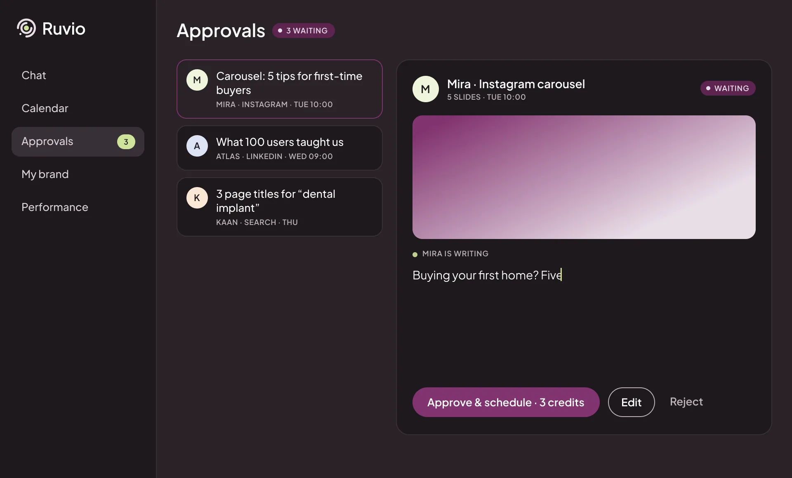
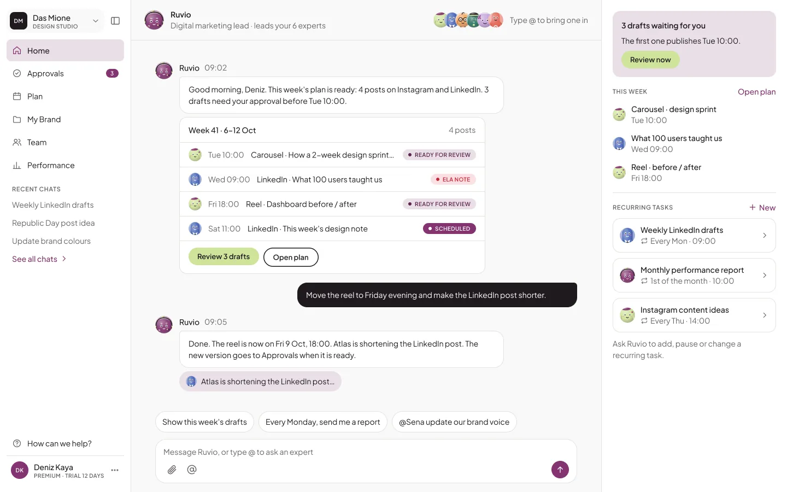
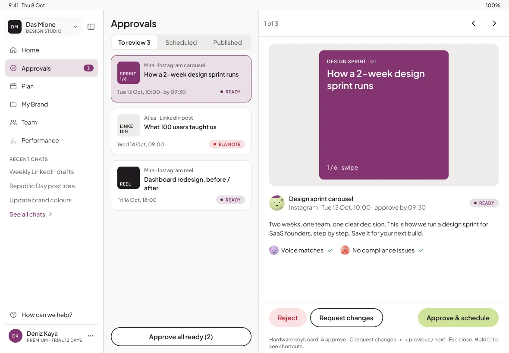
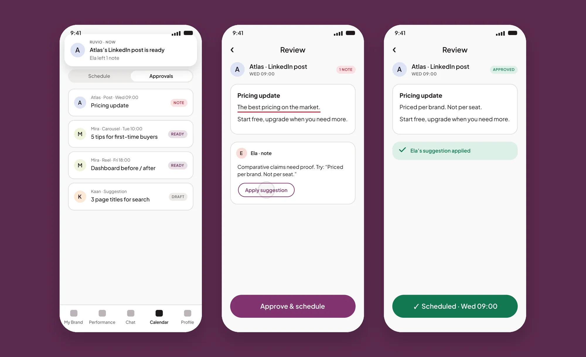
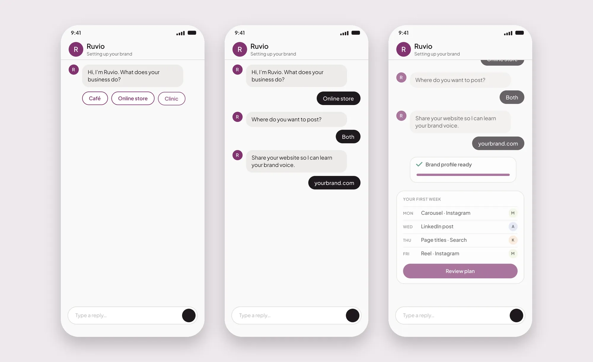
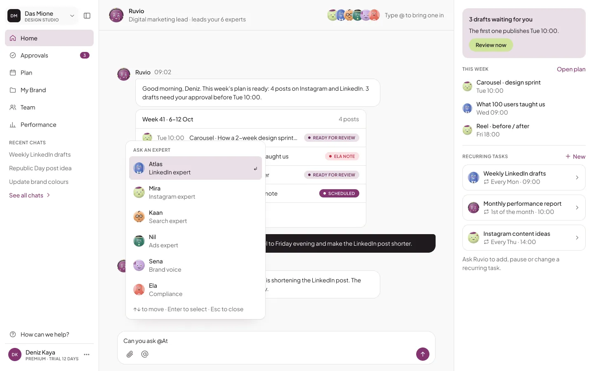
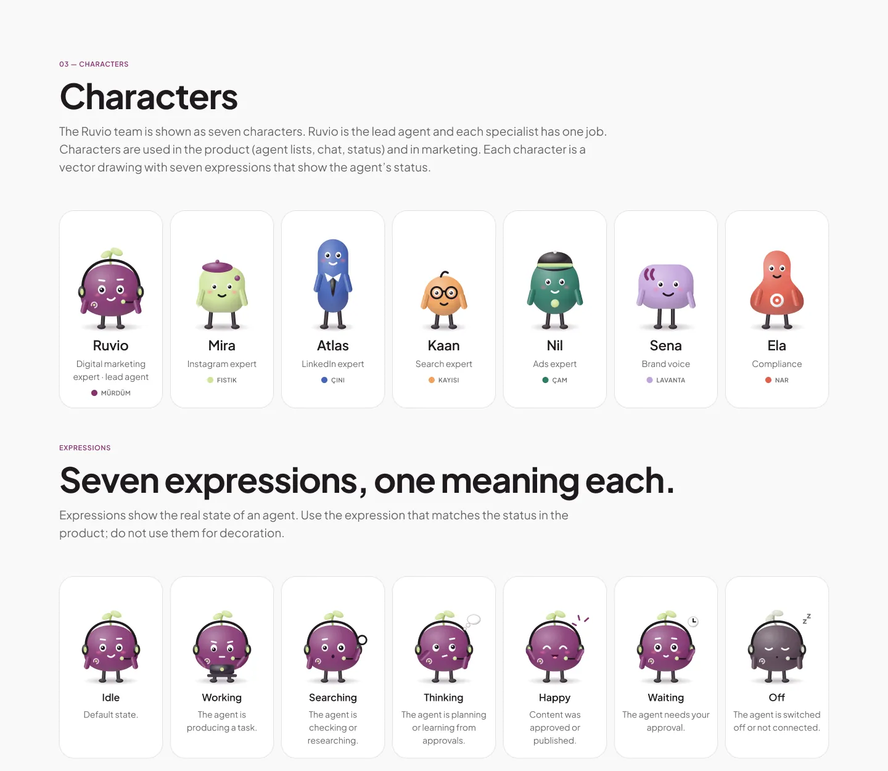
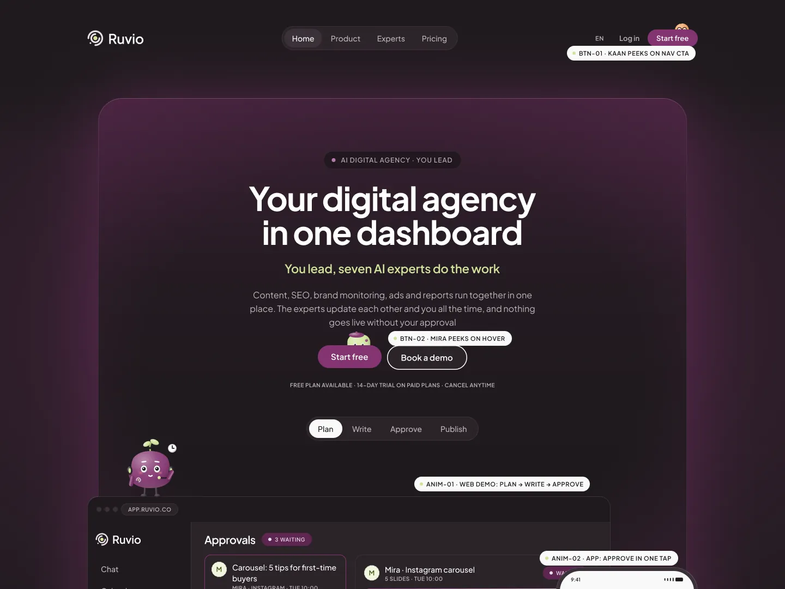
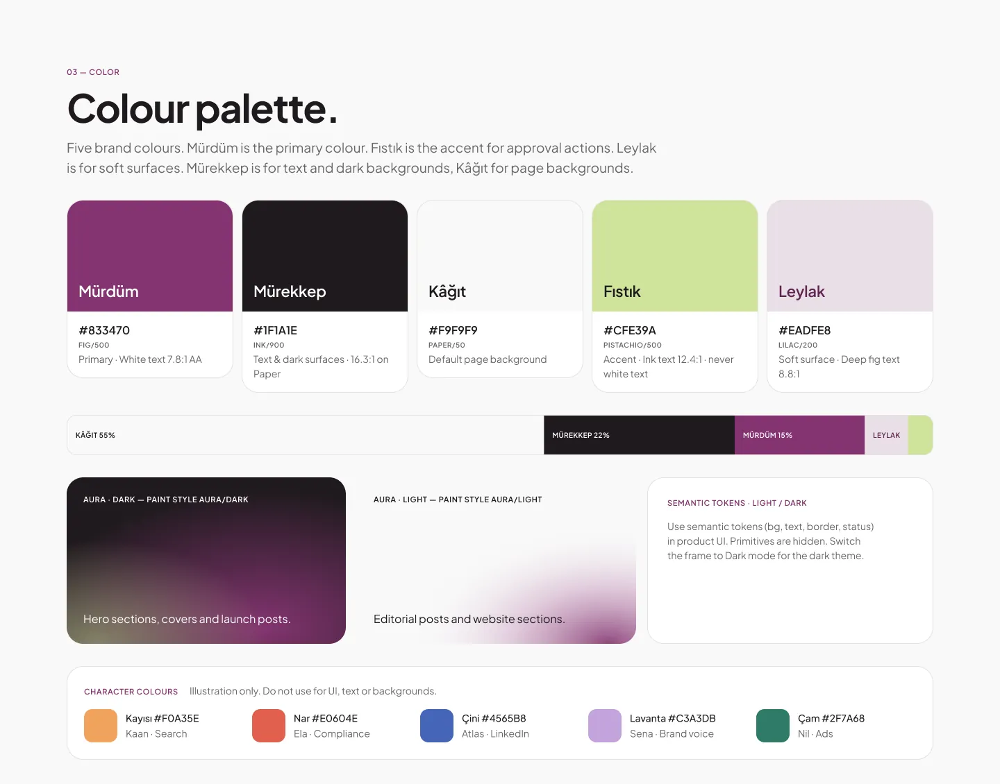
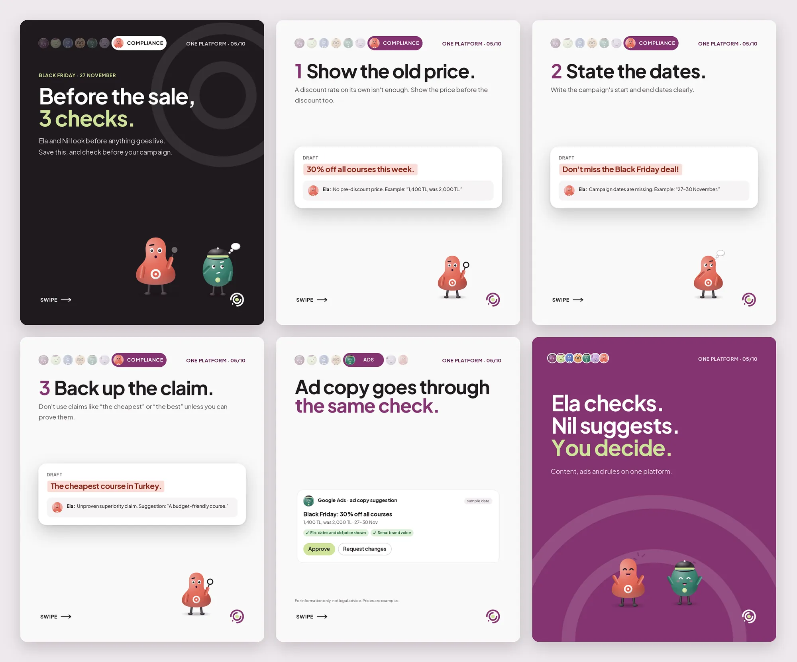

Your marketing team. Your final say.
Ruvio is an AI marketing team for small businesses: a lead agent and six specialists that plan, draft and publish across a customer's channels. It only works if the customer trusts it with their name, so everything is built on one promise — nothing is published without your approval. As founding designer I shaped the product around that rule, then carried it into the brand, the website, the motion and the launch.

A whole product organised around one rule: nothing is published without your approval.
68 variables with light and dark modes behind web, iPad, iPhone and the website.
Seven characters with rules for where they may appear, and nine Figma Motion pieces.
An agent that posts for you is a liability until it asks first
A small business owner's Instagram is their shopfront, and handing it to software that publishes on its own is a risk nobody takes twice. So approval became the architecture, not a setting: Home, the plan, the approvals queue and the phone all lead to the same review surface.
Home is a conversation. Ruvio summarises the week in the chat, and the right-hand panel keeps what is waiting for approval in view — fewer elements per screen, one primary action each, metrics out of the way until someone asks.

One review surface, on every device
Wherever a draft appears, opening it shows the same thing: the post rendered as it will look on the channel, then the caption, the schedule and the checks. After approving, the next draft opens automatically with an undo window, and every card carries its deadline, so the queue reads as a to-do list rather than an inbox.
The layout adapts rather than forks: on iPad landscape it becomes a split view, list on the left and review on the right; on iPad portrait it becomes a page sheet; on iPhone a full-height sheet with the decision at the thumb. Keyboard shortcuts — A, C, ← → — carry power users through the queue on desktop.
The accent colour is reserved for Approve alone, so the eye finds the one action that matters.


A team you talk to, not a model you prompt
Onboarding is three questions in a chat — what the business does, where to post, and a website link — and the customer lands on a first week's plan to react to. An earlier version asked people to build a website inside onboarding; it was cut, because a first-time user hasn't yet decided to trust the product with anything.
After that, the product stays a conversation. Typing @ in any chat brings an expert into the thread — Mira for Instagram, Atlas for LinkedIn, Kaan for search, Nil for ads, Sena for brand voice, Ela for compliance. Each is a character with seven expressions that map to real states (working, searching, thinking, waiting), drawn as one face system that scales from a 96 px avatar down to 24.



Compliance as a teammate, before the approval
Ela reads every draft for brand voice and for claims that need backing up — a discount without dates, a “best price” without evidence — and leaves a note with a fix. A draft with a note can't be swept through with “Approve all ready”; a human has to open it. The customer can apply the suggestion or keep their own wording.
The rules carry into the system states too: no characters in error, billing or legal messages. When money or the law is involved, the product drops the charm and speaks plainly.
The customer can approve quickly because something has already read carefully.
The brand makes the same promise as the product
The palette — Mürdüm, the deep plum, and Fıstık, the pistachio green — is the product's palette, and Fıstık means the same thing on the website as in the app: approval. One typeface, Plus Jakarta Sans, runs through product and marketing, and it covers every Turkish character.
The dark website was built as ten pages — home, product, pricing, docs and the experts — in English and Turkish, with its own nav and footer components and animation briefs for each motion slot. The three pinned Instagram posts explain the product in the order it works.



A product whose promise you can see on every screen.
From a blank file to a lead agent, six experts, onboarding, a weekly plan, the approvals queue and the review surface on web, iPad and iPhone — plus the brand, the character system, the website, nine motion pieces and the Instagram launch, in English and Turkish, all on one rule.